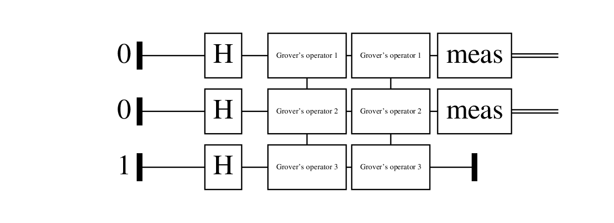

Algoritmos cuánticos en Quipper
Quipper
Instalación
- Instalar
stack, - clonar
mx-psi/quantum-algorithmsy - ejecutar
make build
El lenguaje
Quipper es un lenguaje embebido en Haskell que permite definir circuitos. Nos permite:
- Dar instrucciones para generar un circuito,
- generar los circuitos y
- ejecutarlos.
Todas las operaciones ocurren en una mónada Circ.
Un ejemplo de circuito

Circuitos clásicos
El espacio de estados
Un ordenador clásico hace cálculos con símbolos.
Un bit es un elemento del espacio de estados \(\mathbb{B} := \{0,1\}\).
En Quipper el tipo de los bits es Bit.
Puertas clásicas
Una puerta clásica es una función \(f: \mathbb{B}^n \to \mathbb{B}^m\).
- \(n\) es el número de entradas y
- \(m\) es el número de salidas.
Circuitos
Un circuito es un grafo dirigido acíclico etiquetado con puertas, salidas y entradas, de tal forma que los grados coincidan.
Tiene una función \(C:\mathbb{B}^n \to \mathbb{B}^m\) asociada.
Ejemplo: NAND
Familias de circuitos
Cuando necesitamos tener una entrada de tamaño arbitrario, consideramos una familia de circuitos \(\mathcal{C} = \{C_n\}_{n \in \mathbb{N}}\), tal que \(C_n\) tiene \(n\) entradas.
Su función asociada es \(\mathcal{C}(x) = C_{|x|}(x)\).
Es uniforme si la función \(n \mapsto C_n\) es computable.
Circuitos reversibles
Para hacer un circuito reversible, llevamos \(f:\mathbb{B}^n \to \mathbb{B}^m\) en \[g(x,y) = (x, y \oplus f(x)).\]
En Quipper esto se hace con la función classical_to_reversible,
Circuitos cuánticos
El espacio de estados
El espacio de estados es un espacio de Hilbert separable complejo.
Un qubit es un vector unitario de un espacio vectorial complejo con base ortonormal \(\{|0\rangle,|1\rangle\}\), \[|\psi\rangle = \alpha |0\rangle + \beta |1\rangle, \qquad |\alpha|^2 + |\beta|^2 = 1\] \(\alpha\) y \(\beta\) son las amplitudes de \(|\psi\rangle\).
Con \(n\) qubits, el espacio de estados es \(Q^{\otimes n}\). En Quipper, el tipo de un qubit es Qubit.
¿Qué es una puerta cuántica?
Una puerta cuántica es una aplicación unitaria \(U: Q^{\otimes n} \to Q^{\otimes n}\).
La puerta de Hadamard se define \[H|x\rangle = \frac{1}{\sqrt{2}}(|0\rangle + (-1)^x|1\rangle)\]
En Quipper,
Medición
La salida de un circuito cuántico será un vector unitario. Si medimos \[|\psi\rangle = \sum_{i = 0}^{2^n-1} \alpha_i|i\rangle\] tenemos \[P(\operatorname{Meas}|\psi\rangle = i) = |\alpha_i|^2\]
Medición y error
La salida de un circuito será un vector de amplitudes que muestreamos.
\(C: Q^{\otimes n} \to Q^{\otimes m}\) calcula \(f: \mathbb{B}^n \to \mathbb{B}^m\) si \[P[C|x\rangle = f(x)] \geq \frac23\]
Grover
El problema
Dada una función \(f: \mathbb{B}^n \to \mathbb{B}\) y el número \[M = |\{x \;:\; f(x) = 1\}| > 0,\] hallar una solución de \[f(x) = 1.\]
La función se nos da en forma de un circuito (oráculo) que calcula \[U|x\rangle|y\rangle = |x\rangle|y\oplus f(x)\rangle.\] Lo encapsulamos en un tipo de datos Oracle.
Operador de difusión
El operador de difusión \(D_n:Q^{\otimes n} \to Q^{\otimes n}\) consiste en
- Aplicar la puerta de Hadamard a cada qubit,
- aplicar un “cambio de fase” que lleva \[|x\rangle \mapsto (-1)^{\delta_{x0}} |x\rangle\] y
- aplicar de nuevo la puerta de Hadamard a cada qubit.
El operador de Grover
Si \(|\downarrow\rangle = H|1\rangle\) entonces \[U|x\rangle|\downarrow\rangle = (-1)^{f(x)}|x\rangle|\downarrow\rangle\]
El operador de Grover consiste en
- Aplicar el oráculo, fijando el último qubit a \(|\downarrow\rangle\) y
- aplicar el operador de difusión a todos salvo el resto de qubits.
Interpretación geométrica
El operador de Grover es la composición de dos reflexiones,
- El oráculo refleja respecto a la suma uniforme de los vectores que no son soluciones y
- el operador de difusión refleja respecto de la suma uniforme de las posibles entradas.
¡La composición de dos reflexiones es una rotación!
El algoritmo de Grover
Rotamos la suma uniforme de todas las entradas hasta acercarnos a la suma uniforme de todas las entradas.
grover :: Int -> Oracle [Qubit] -> Circ [Bit]
grover m oracle = do
(x, y) <- qinit (qc_false (shape oracle), True)
(x, y) <- map_hadamard (x, y)
(x, y) <- n `timesM` (groverOperator oracle) $ (x, y)
qdiscard y
measure x
where n = ...Se puede probar con el ejecutable quantum.
Circuito

Extra
Referencias
- Quantum Computation and Quantum Information - Nielsen & Chuang
- One Complexity Theorist’s View of Quantum Computing - Fortnow
- Quantum Computational Complexity - Watrous
- An Introduction to Quantum Programming in Quipper - Green et al.
QShape
La clase de tipos QShape permite generalizar los tipos de las funciones:
Generación de circuitos
Podemos generar circuitos automáticamente a partir de funciones booleanas.